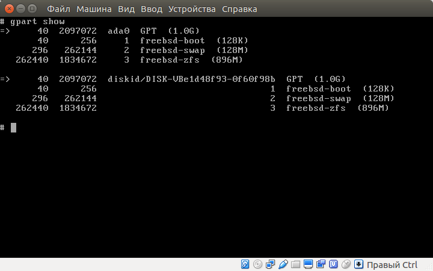

test
test [ключи]
ключи:
| Ключ | Описание |
|---|---|
Пример:
host
host [ключи]
ключи:
| Ключ | Описание |
|---|---|
Пример:
Узнать ip
avis@PC:~$ host ko4ergin.ru
ko4ergin.ru has address 92.53.96.30
ko4ergin.ru has IPv6 address 2a03:6f00:1::5c35:601e
ko4ergin.ru mail is handled by 10 mx1.timeweb.ru.
ko4ergin.ru mail is handled by 20 mx2.timeweb.ru.
Узнать кому принаджелит ip
avis@PC:~$ host 92.53.96.30
30.96.53.92.in-addr.arpa domain name pointer vh44.timeweb.ru.
ss
ss [ключи] [фильтр]
ключи:
| Ключ | Описание |
|---|---|
| -s, --summary | Итого |
| -p, --processes | Вывести процессы |
| -l | Слушающие | -a | Ожидающие |
| -t | TCP |
| -u | UDP |
| -x | Unix |
Фильтры:
| Фильтр | Описание |
|---|---|
| all | все состояния |
| established | |
| syn-sent | |
| syn-recv | |
| fin-wait-1 | |
| fin-wait-2 | |
| time-wait | |
| closed | |
| close-wait | |
| last-ack | |
| listening | |
| closing | |
| connected | все состояния, кроме ожидающих соединения и закрытых |
| synchronized | все состояния, соответствующие установленным соединениям, за исключением syn-sent |
| bucket | состояния, представляющие собой минисокеты, например — time-wait и syn-recv |
| big | всё кроме того, что соответствует идентификатору bucket |
Пример:
Все ожидающие TCP соединения с IPv4
avis@PC:~$ ss -t4 state listening
Recv-Q Send-Q Local Address:Port Peer Address:Port
0 50 *:microsoft-ds *:*
0 80 127.0.0.1:mysql *:*
0 50 *:netbios-ssn *:*
0 128 127.0.0.1:11211 *:*
0 10 127.0.0.1:2222 *:*
0 5 127.0.1.1:domain *:*
0 100 *:smtp *:*
Информация о подключенном IP
root@host0:~# ss dst 192.168.33.1
Netid State Recv-Q Send-Q Local Address:Port Peer Address:Port
tcp ESTAB 0 0 192.168.33.10:ssh 192.168.33.1:58484
chroot
chroot [ключи]
ключи:
| Ключ | Описание |
|---|---|
Пример:
kldload
kldload [ключи] [модуль]
ключи:
| Ключ | Описание |
|---|---|
Пример:
zpool
zpool [действие] [ключи]
ключи:
| Ключ | Описание |
|---|---|
| -f, --force | |
| -d | Отключить все фичи по умолчанию |
| -o property=value | включить фичу |
| -O file-system-property=value | Настройки файловой системы |
| -m | точка монторования Если ее нет, то нужно выбрать legacy или none
|
- create - создает пул из 1 или нескольких жеских дисков (страйп режим)
- add - добавляет новый диск в пул в страйп режим
- detach - отсоединяет диск от пула. Работает в mirror режиме
- attach - присоединяет диск от пула. Работает в mirror режиме
- replace - заменяет диски
- status - выводит подробный статус пула
- list - выводит список пулов
- destroy - удалить пул. При удалении пула, удаляется и фс !
# создаем пул с разделенным методом т.е. часть на 1 диск часть на другой
root@freebsd11:~ # zpool create test01 /dev/ada1 /dev/ada2
root@freebsd11:~ # zpool list
NAME SIZE ALLOC FREE EXPANDSZ FRAG CAP DEDUP HEALTH ALTROOT
test01 1.97G 93K 1.97G - 0% 0% 1.00x ONLINE -
# создание зеркального пула. Все данные зеркалируются на оба диска
root@freebsd11:/ # zpool create test02 mirror /dev/ada1 /dev/ada2
root@freebsd11:/ # zpool status
pool: test02
state: ONLINE
scan: none requested
config:
NAME STATE READ WRITE CKSUM
test02 ONLINE 0 0 0
mirror-0 ONLINE 0 0 0
ada1 ONLINE 0 0 0
ada2 ONLINE 0 0 0
errors: No known data errors
root@freebsd11:~ # zpool list
NAME SIZE ALLOC FREE EXPANDSZ FRAG CAP DEDUP HEALTH ALTROOT
test01 1008M 522K 1007M - 0% 0% 1.00x ONLINE -
root@freebsd11:~ # zpool add test01 /dev/ada2
root@freebsd11:~ # zpool list
NAME SIZE ALLOC FREE EXPANDSZ FRAG CAP DEDUP HEALTH ALTROOT
test01 1.97G 104K 1.97G - 0% 0% 1.00x ONLINE -
root@freebsd11:/ # zpool detach test02 /dev/ada1
root@freebsd11:/ # zpool status
pool: test02
state: ONLINE
scan: none requested
config:
NAME STATE READ WRITE CKSUM
test02 ONLINE 0 0 0
ada2 ONLINE 0 0 0
errors: No known data errors
root@freebsd11:/ # zpool attach test02 /dev/ada2 /dev/ada1
root@freebsd11:/ # zpool status
pool: test02
state: ONLINE
scan: resilvered 78.5K in 0h0m with 0 errors on Wed Jan 3 02:21:44 2018
config:
NAME STATE READ WRITE CKSUM
test02 ONLINE 0 0 0
mirror-0 ONLINE 0 0 0
ada2 ONLINE 0 0 0
ada1 ONLINE 0 0 0
errors: No known data errors
root@freebsd11:/test01 # zpool replace test01 /dev/ada1 /dev/ada3
root@freebsd11:/test01 # zpool status
pool: test01
state: ONLINE
scan: resilvered 58.5K in 0h0m with 0 errors on Wed Jan 3 02:11:23 2018
config:
NAME STATE READ WRITE CKSUM
test01 ONLINE 0 0 0
ada3 ONLINE 0 0 0
ada2 ONLINE 0 0 0
errors: No known data errors
root@freebsd11:~ # zpool status
pool: test01
state: ONLINE
scan: none requested
config:
NAME STATE READ WRITE CKSUM
test01 ONLINE 0 0 0
ada1 ONLINE 0 0 0
root@freebsd11:~ # zpool list
NAME SIZE ALLOC FREE EXPANDSZ FRAG CAP DEDUP HEALTH ALTROOT
test01 1008M 86K 1008M - 0% 0% 1.00x ONLINE -
test02 1008M 500K 1008M - 0% 0% 1.00x ONLINE -
root@freebsd11:~ # zpool destroy test01
root@freebsd11:~ # zpool list
NAME SIZE ALLOC FREE EXPANDSZ FRAG CAP DEDUP HEALTH ALTROOT
test02 1008M 500K 1008M - 0% 0% 1.00x ONLINE -
todo
root@freebsd11:~ # zpool destroy test01
root@freebsd11:~ # zpool list
NAME SIZE ALLOC FREE EXPANDSZ FRAG CAP DEDUP HEALTH ALTROOT
test02 1008M 500K 1008M - 0% 0% 1.00x ONLINE -
Фичи
| Опция | Описание |
|---|---|
| feature@lz4_compress=enabled | Компрессия сжатия данных |
| ashift=12 | ? |
Настройки фс
| Опция | Описание |
|---|---|
| compression=lz4 | Установка способа сжатия |
zfs
zfs [действие] [диск] [ключи]
Утилита использование zfs системы
ключи:
| Ключ | Описание |
|---|---|
| -p | создать "родителей" |
| -r | удалить рекурсивно |
- list - список файловых систем
- create - создание новой файловой системы
- destroy - удаление фс
root@freebsd11:~ # zfs list
NAME USED AVAIL REFER MOUNTPOINT
test01 74K 880M 23K /test01
test02 293K 880M 23K /test02
# Создание вложенных фс
root@freebsd11:~ # zfs create -p test01/data/www
root@freebsd11:~ # ls -l /test01/data/www/
total 0
# создание без точек монтирования
root@freebsd11:~ # zfs create -o mountpoint=none test01/home
root@freebsd11:~ # zfs list
NAME USED AVAIL REFER MOUNTPOINT
test01 168K 880M 23K /test01
test01/data 46K 880M 23K /test01/data
test01/data/www 23K 880M 23K /test01/data/www
test01/home 23K 880M 23K none
test02 293K 880M 23K /test02
root@freebsd11:~ # zfs destroy test01/home
root@freebsd11:~ # zfs list
NAME USED AVAIL REFER MOUNTPOINT
test01 132K 880M 23K /test01
test01/data 46K 880M 23K /test01/data
test01/data/www 23K 880M 23K /test01/data/www
test02 293K 880M 23K /test02
# Удаление рекурсивно, в случае если фс содержит вложенные фс
root@freebsd11:~ # zfs destroy -r test01/data
root@freebsd11:~ # zfs list
NAME USED AVAIL REFER MOUNTPOINT
test01 87.5K 880M 23K /test01
test02 293K 880M 23K /test02
mkdir
mkdir [ключи] [название директории]...
Создаение директории
ключи:
| Ключ | Описание |
|---|---|
| -p | создание "родителей" |
Пример:
df
df [ключи]
Показывает сведения о файловой системе
ключи:
| Ключ | Описание |
|---|---|
| -h, --human-readable | показывает размеры в человеко читаемом формате |
Пример:
root@freebsd11:/test02 # df -h /test02/
Filesystem Size Used Avail Capacity Mounted on
/dev/ada0p2 9.0G 1.1G 7.2G 13% /
| Ключ | Описание |
|---|---|
| Filesystem | Название файловой системы |
| Size | Общий размер |
| Used | Сколько использованно |
| Avail | Сколько свободно |
| Capacity | |
| Mounted on | Точка монторования |
gpart
gpart [действие] [ключи] [диск]
Программа для разметки дисков
gpart - “guess PC-type hard disk partitions” - “угадай тип раздела жесткого диска”
Ключи:
| Ключ | Описание |
|---|---|
| -t | тип:
|
| -l | установить лейбл |
| -s | размер в килобайтах |
| -i | порядковый номер |
| -F | |
| -b | параметр смещения |
| -p | |
| -i | индекс удаляемого раздела |
Действия
- create - создает таблицу разделов
- add - добавляет новый раздел
- show - показать таблицу разделов
- bootcode - загрузочный код ?
- -p partcode
- -p bootcode
- delete - удаляет раздел
- destroy - очищает файловую систему
gpart create -s gpt ada0
# Создаем загрузочный раздел
gpart add -b 40 -t freebsd-boot -l gpboot -s 64k ada0
# если разметка ufs то создаем:
# свап
gpart add -t freebsd-swap -l gpswap -s 128M ada0
# подсистемы
# основной раздел
gpart add -t freebsd-ufs -l gproot -s 256M ada0
# для логи
gpart add -t freebsd-ufs -l gpvar -s 256M ada0
# для временных файлов
gpart add -t freebsd-ufs -l gptmp -s 256M ada0
# для общих файлов
gpart add -t freebsd-ufs -l gpusr ada0
# если zfs, то достаточно
gpart add -t freebsd-zfs -l disk ada0

gpart bootcode -b /boot/pmbr -p /boot/gptboot -i 1 ada0
mount
mount [ключи] [от куда] [куда]
Монтирование файловых систем
Ключи:
| Ключ | Описание |
|---|---|
| -t, --types | тип файловой системы:
|
Пример:
TODO
mkfile
mkfile [ключи] [размер][ед. измерения] [путь до файла]
Создание файла указанного размера
ключи:
TODOед. измерения:
- e
- p
- t
- g
- m - мегабайты
- k
- b
Пример:
Создать файл /test/foo, размером 100 мб.
mkfile 100m /test/foo
dd
dd [ключи]
Копирование данных побайтово
Ключи:
| Ключ | Описание |
|---|---|
| --help | показать справку и выйти |
| --version | показать информацию о версии и выйти |
Пример:
Скопировать из /dev/urandom в of=/dev/null 500мб
dd if=/dev/urandom of=/dev/null bs=100M count=5